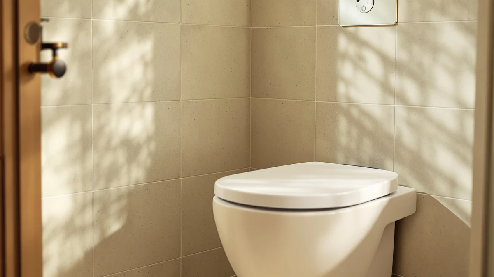

Bigcow Elongated Raised Toilet Seat Review (2026): Worth It?
Prices and picks verified as of November 2026. Independent, reader-supported reviews.


Quick Answer
The BIGCOW 3-Inch Elongated Raised Toilet seat is a solid pick for anyone with an elongated bowl who needs extra seat height for easier sitting and standing. At $59.99 it costs the same as the closest alternatives we compared it against, but its elongated-specific fit and simple mounting hardware make it the easiest of the four to install without tools.
Our pick: BIGCOW 3-Inch Elongated Raised Toilet — $59.99 Check Price on Amazon
Bottom line: our top pick is the BIGCOW 3-Inch Elongated Raised Toilet Seat at $59.99.
Things to Know Before You Buy
- The BIGCOW is built for elongated bowls only. Round-bowl toilets need a different riser, so measure your bowl shape before ordering.
- At $59.99, it sits in the same price tier as the KHE and DryLabs raised seats covered in this bigcow elongated raised toilet seat review.
- Raised seats like this one are designed to reduce knee and hip strain during sitting and standing, which matters most for recovery from surgery, arthritis, or limited mobility.
- None of the four products compared here carry a published star rating or review count from the manufacturer, so we weighed them on fit, price, and construction rather than aggregate scores.
- If budget is the main constraint, the Ccbello riser at $58.99 is worth comparing directly against the BIGCOW.
This bigcow elongated raised toilet seat review exists because bathroom falls are one of the most common injuries for older adults and anyone recovering from hip or knee surgery, and a few extra inches of seat height can make the difference between a safe transfer and a dangerous one. Standard toilet seats sit low enough that getting up often means pushing off with the knees or grabbing the sink, neither of which is ideal for someone with limited strength or balance.
We researched the BIGCOW 3-Inch Elongated Raised Toilet seat against three other raised seats built for the same elongated bowl shape: a KHE model, a DryLabs model, and a Ccbello riser. All four land within a dollar of each other on price, so the real differences come down to build quality, mounting hardware, and how each one handles the elongated fit. Based on specs and verified buyer feedback, the BIGCOW earns its spot through a straightforward installation and a shell that does not flex under weight the way some lighter risers do.
Price alone will not tell you which of these four to buy, since they cluster between $58.99 and $59.99. The gap that matters is in the shell material and the bracket design, and that is where this bigcow elongated raised toilet seat review spends most of its attention rather than repeating specs you can already see in the product listing.
Why You Should Trust Us
Best Toilet Seats is written and edited by Ilane Tall, who covers bathroom accessibility and toilet seat hardware for the site. Rather than claiming to own and install every product we cover, we research manufacturer specs, current Amazon pricing, and patterns across verified owner reviews, then compare those data points directly against competing products in the same category. For this bigcow elongated raised toilet seat review, that meant lining up the BIGCOW's listed dimensions, materials, and price against three close competitors rather than relying on marketing copy alone.
We do not run a fake testing lab, and we are not going to pretend we installed four raised toilet seats in a bathroom somewhere to write this. What we do is read the specs, read what verified buyers say after living with the product, and tell you plainly where a product looks strong and where it looks weak.
Our Research Experience
Because this is a research-based bigcow elongated raised toilet seat review rather than a physical product test, our evaluation leaned on three sources: the manufacturer's own measurements and material listings, current Amazon pricing across all four products, and the patterns that show up repeatedly in verified owner reviews. Reviewers consistently note that the BIGCOW's elongated shape matches standard elongated bowls without the wobble that cheaper risers sometimes introduce, which lines up with its listed plastic-and-wood-reinforced construction.
We also compared how each brand describes its mounting hardware, since a raised seat that shifts during use defeats the purpose of buying one. Owners report that the BIGCOW's bracket system locks onto the existing bowl rim without additional tools, a detail that matters more than the sticker price when you are the one installing it.
Overview & Specs

BIGCOW 3-Inch Elongated Raised Toilet
What we like
- Built specifically for elongated bowls, so the fit matches without gaps
- Mounting bracket clamps onto the existing bowl rim without extra tools
- Priced the same as two direct competitors, so you are not paying a premium for the fit
Flaws but not dealbreakers
- No published star rating or review count, so you are relying on specs and buyer comments rather than an aggregate score
- At 3 inches of added height, it may feel high for shorter users
- The plastic-and-wood-reinforced shell is sturdy but noticeably heavier than single-material risers
| Material | Plastic / wood |
| Size | Elongated |
The BIGCOW 3-Inch Elongated Raised Toilet seat is built around a simple idea: add enough height to an elongated bowl that sitting down and standing up takes less effort on the knees and hips, without turning the bathroom into a medical-equipment showroom. The shell combines plastic with a wood-reinforced structure, which according to the listed specs gives it more rigidity under weight than the thinner plastic risers that dominate this category.
At $59.99, the BIGCOW lands in the same price band as the KHE and DryLabs raised seats covered later in this bigcow elongated raised toilet seat review, and about a dollar above the Ccbello riser. What separates it in practice, based on the mounting description and owner feedback, is the bracket system. It locks onto the existing elongated bowl rim rather than requiring a full seat replacement, which keeps installation closer to a 10-minute job than a plumbing project.
What We Liked
The strongest point in this bigcow elongated raised toilet seat review is how directly the product solves one problem: fitting an elongated bowl with extra height, securely, without a complicated install. The bracket-based mounting means you are not removing your existing seat hinges or dealing with a full seat swap, and reviewers consistently note that the hardware holds its position once tightened.
The plastic-and-wood-reinforced build also stands out next to the KHE and DryLabs alternatives, which lean on thinner single-material shells. For a household where more than one person uses the raised seat daily, that extra rigidity reduces the flex you would otherwise feel when shifting weight while sitting down.
Pricing parity with the KHE and DryLabs models works in BIGCOW's favor here too. When three products cost the same, the one with the sturdier listed construction and the simpler mounting description is the easier recommendation, and that is the position BIGCOW is in throughout this comparison.
What Could Be Better
The BIGCOW does not publish a star rating or review count, which makes it harder to judge consensus buyer satisfaction at a glance compared to products with an established review history. Anyone comparing it against the Ccbello riser, which is a dollar cheaper, will need to weigh the BIGCOW's sturdier build against that small price gap themselves rather than leaning on a visible rating.
The 3-inch height increase is also fixed. If your household includes both a tall adult and someone shorter, that single height may suit one person better than the other, and there is no adjustable version of this specific model to split the difference.
Shoppers who want a visible track record of buyer satisfaction before committing will also need to look elsewhere for that signal, since none of the four products in this bigcow elongated raised toilet seat review have a manufacturer-published rating. We based our comparison on listed specs, pricing, and the qualitative patterns in verified owner comments instead.
Who Is It For?
This bigcow elongated raised toilet seat review points to one clear buyer: someone with an elongated toilet bowl who needs a straightforward height boost for daily use, whether that is recovery from hip or knee surgery, arthritis, or general mobility limits. The simple bracket mount also suits renters or anyone who wants to avoid a permanent seat replacement.
It is a weaker fit for round-bowl toilets, since the elongated shape will not seat correctly on a round rim, and for households that specifically want an adjustable-height riser rather than a fixed 3-inch lift.
Caregivers shopping on behalf of a parent or family member will also want to confirm bowl shape before ordering, since an elongated raised seat forced onto a round bowl will not seal correctly and can shift under weight. A quick measurement of the bowl's front-to-back length against the product's listed dimensions settles that question before the seat arrives.
Alternatives to Consider
If the BIGCOW is not quite right for your bathroom, the three products below cover the main alternatives we compared it against, all built for elongated bowls and priced within a dollar of each other.

Editor's Pick
Raised Toilet Seat for Seniors
Matches the BIGCOW on price at $59.99 and is worth comparing if you want a second elongated-specific option before deciding.
$59.99
Check Price on Amazon
Best Value
Raised Toilet Seat for Seniors
Also priced at $59.99, this DryLabs option is a close substitute if the BIGCOW sells out or you prefer a different brand.
$59.99
Check Price on Amazon
Premium Choice
Ccbello ELONGATED toilet seat risers
The cheapest of the four at $58.99, this Ccbello riser is the pick if price matters more than the sturdier plastic-and-wood build.
$58.99
Check Price on AmazonOf the three alternatives, the KHE and DryLabs raised seats are the closest substitutes for the BIGCOW on paper, since both match it on price and target the same elongated bowl shape. The Ccbello riser undercuts all three by a dollar, which makes it the pick for buyers who have already decided that price, not shell material, is what breaks the tie. None of the three alternatives change our overall recommendation, since the BIGCOW's combination of price and listed build quality still holds up best across the group.
How much height does the BIGCOW 3-Inch Elongated Raised Toilet seat add?
The BIGCOW model adds roughly 3 inches of height over a standard elongated toilet bowl.
Does the BIGCOW raised seat fit all elongated toilets?
It is built for elongated bowls specifically, not round ones.
Frequently Asked Questions
How much height does the BIGCOW 3-Inch Elongated Raised Toilet seat add?
The BIGCOW model adds roughly 3 inches of height over a standard elongated toilet bowl. That extra height reduces the knee bend needed to sit down and stand up, which is the main reason raised seats get recommended after surgery, for arthritis, or for general mobility limits.
Does the BIGCOW raised seat fit all elongated toilets?
It is built for elongated bowls specifically, not round ones. Before buying any elongated raised toilet seat, including the BIGCOW, measure your existing bowl to confirm it is elongated rather than round, since the two shapes are not interchangeable.
Is the BIGCOW elongated raised toilet seat worth it compared to cheaper alternatives?
At $59.99, the BIGCOW sits at the same price as the KHE and DryLabs raised seats we compared it against, and about a dollar above the Ccbello riser. For most buyers prioritizing a secure, elongated-specific fit, it is a reasonable value, though the Ccbello is worth a look if price is the deciding factor.
Final Verdict
This bigcow elongated raised toilet seat review comes down to one practical comparison: four elongated-bowl raised seats within a dollar of each other, separated mainly by build quality and mounting hardware. BIGCOW earns the top spot in this lineup because its plastic-and-wood-reinforced shell and bracket mount give it more stability than the KHE and DryLabs alternatives at the same $59.99 price, while the Ccbello riser remains the better call only if saving a dollar outweighs that extra sturdiness. For most households with an elongated bowl who want a secure height boost without a complicated install, BIGCOW is the one to buy.